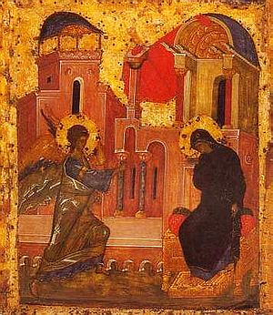

Некоторые заметки к учению св. прав. Николая Кавасилы
Некоторые заметки к учению св. прав. Николая Кавасилы о жизни во Христе: небольшое эссе о моем личном духовном, и академическом богословском восприятии прочитанных текстов
Вновь читая св. прав. Николая Кавасилу, я обратил внимание на ряд духовных и богословских моментов, которые заинтересовали меня. Понимая, что вечная нехватка времени, отсутствие глубоких академических познаний в обсуждаемой мною области, и иные причины будут ограничивать эту скромную работу в ее глубине и новизне, тем не менее, я бы хотел попробовать порассуждать на привлекшие меня содержательные темы, связанные с богословскими и духовно-практическими моментами исихастского учения Кавасилы.
В продолжение предыдущего мини-реферата, рассматривающего проповеди Кавасилы, исторически объединенные в сборник «Семь слов о жизни во Христе», и имея задачей детальнее рассмотреть аскетическую составляющую в наследии Кавасилы, я в первую очередь, начав обзор имеющихся в русском переводе на сайте «Азбуки» работ Кавасилы, обратил внимание на три «мариологические» проповеди святого. Вчитавшись в них, я был заинтересован постановкой некоторых вопросов Кавасилой, что, на фоне одновременного чтения мной статьи Панайотиса Нелласа в русском переводе на том же ресурсе, посвященной христоцентричной антропологии Кавасилы, наполнило меня некоторыми богословскими интуициями, которые начали в этот момент свое развертывание во мне. Отдавая себе отчет в некотором «несторианском» и «мирском» стиле своего мышления, я был заинтересован тем, как Кавасила, пытаясь обосновать исключительную важность и отличность Девы Марии , как представительницы рода человеческого, подводит нас к тому богословскому разрезу, в котором православная традиция, по всей видимости, и начала разработку такой темы, как «святые Божии», их угодничество перед Богом, их служение Церкви.
В свое время, читая предисловие начала 1990-х гг. иером.Тихона Шевкунова к сборнику проповедей Патриарха Тихона 1917-1918 гг., я запомнил определение акта канонизации, данное иером. Тихоном, как «призывание Церковью на служение» некоего канонизируемого Святого. Соответственно рядом находится связанная тема агиографической традиции житийного жизнеописания святых и составления на основе агиографическимх памятников классики акафистного жанра. Говоря о «несторианском» стиле своего мышления, я имею в виду четко фиксируемую мной и вынужденно анализируемую линию трансформирующего перехода конкретных исторических, биографических, психологических фактов в объективацию и снятие их агиографией. На эту тему я также начал свои размышления на I курсе, после прочтения Церковной истории Евсевия Кесарийского, где Евсевий раскрывает символическое значение некоторых ранних христианских источников, которые именно символически надо понимать, а не буквально, в т.ч. как пример семантического кодирования христианами информации от внешних. Так возникла для меня исследовательская проблема какие места в агиографии понимать как классику устоявшегося агиографического литературного жанра со своим канонами, а какую информацию как реальную, в т.ч. трансцендентного божественного плана, хотя особенно меня лично — с момента как раз прочтения внутри работы Евсевия приведенного им письма верных Лионской общины о деталях подвига Лионских мучеников - более всего интересовали как раз горизонты человеческой природы в соприкосновении с божественным, такие как феномены проявления редкого личного мужества и сопротивления пыткам внешне физически слабых людей, что вызывало у профессиональных палачей системы римского имперского судопроизводства психологический шок. Такой же священный трепет ощущал и я, соприкоснувшись, помимо чудес классической агиографии, идущих беспрерывным неотмирным потоком, с конкретными проявления редкого духовного мужества ранних христиан, побеждавших таким образом, как минимум, на чисто человеческом плане, языческую империю со своей устоявшейся мифологией и этикой, в том числе воинской, которая столкнулась с новым воинством Духа в лице христиан. Кавасила, пытающийся возвести чисто человеческую казалось бы, чистоту, кротость и смирение Девы Марии в некие агиографические, и далее — трансцендентные высоты, закрепив за ней статус совершенного человека, ради которого(«Ибо было совершенно необходимо, чтобы человеческая природа некогда выказала себя соответствующей тому делу, ради которого она изначально была создана и принесла человека, который мог бы достойно послужить цели Творца» - пишет Кавасила в «Слове на Благовещение»), а не ради падшего Адама, Богом-Отцом творились изначально сами пределы и потенциал человеческой природы, показать и закрепить в Предании Деву Марию как некое сверхъественное, изначально освященное существо, в священной точке человеческой истории дополняющее своим существованием как Предвечный Совет Пресвятой Троицы, так и Воплощение Богочеловека, заинтересовал меня данными высокими богословскими построениями.«Он создал ее с самого начала такой, чтобы, когда придет время Ему родиться (по человечеству), позаимствовать у нее для Себя Матерь. Положив прежде такое применение как некую норму, в соответствии с ним Он и образует затем человека. И потому с необходимостью должен был явиться человек, который бы во всем соответствовал (цели творения). Никакая другая конечная цель создания человека не может быть предпочтена этой являющейся высшей из всех и доставляющей Творцу наибольшие честь и славу. Равно невероятно, чтобы Бог не достиг поставленной цели в том, что Он творит.» пишет Кавасила в «Слове на Благовещение Пресвятой Владычицы нашей Богородицы».
С интересующей нас в этом семестре аскетической точки зрения, и с точки зрения интересующей лично меня практической стороны исихазма, как доступной любому желающему христианину мировоззрения и духовной практики (при условии внимательного и ответственного отношения к святоотческой традиции) данная тема заинтересовала меня, как важный вопрос — где предустановленное из вечности измерение потенциальной святости человека, а где доступное каждому из нас путем личных усилий и некоего внутреннего подвига освящение и единение с благодатным Женихом нашего внутреннего человека…
Иными словами, на этот раз, уже в начале новой попытки приблизиться к пониманию Кавасилы, я столкнулся с еще одним направлением развития им исихастских идей, где доступный нам всем внутренний свет обожения в единении с божественными энергиями, показан уже в некоем снятом, и закрепленном в виде священного символа, образе Девы Марии, как Богородицы, Матери Света.
Кавасила дерзновенно и ярко богословствует, славя Богородицу, как преображение человеческого естества еще до Фаворского Преображения, и до окончательного его изменения, в потенциале для всего человечества, через Воскресение Господне. «О, Дева, ставшая при начале блаженства и святости и открывшая путь другим!» пишет Кавасила в «Слове на Достопокланяемое и преславное Успение Пресвятой и Пречистой Владычицы нашей Богородицы».
Вслед за св. прав. Николаем Кавасилой интуитивно богословствуя, пытался выстроить некие модели понимания и я.
Таким образом, мы видим у Кавасилы уникальное (по крайней мере на уровне моих скудных знаний) Богословие Богородицы как приуготовившей, в себе самой, человеческое естество к Боговоплощению, как будто не было грехопадения во всем этом естестве, и, хотя и Сам Сын Божий, родившийся от Девы, был все-таки подвластен последствиям греховности человеческой природы, через «безукоризненные страсти», такие как телесная немощь, душевная скорбь, и Богородица подлежала им же, но, согласно Кавасиле, преодолела более глубокую греховность человеческой природы уникальными, поистине ангельскими особенностями своей личности, невероятной чистотой своей, и, после того как приняла в свое чрево Сына Божьего, возвысилась до особого служения перед родом человеческим. выражающегося в предстоянии и заступничестве перед Сыном за весь человеческий род.
«Что же касается Блаженной, то тем, что Она удостоилась услышать «Радуйся!» и была поименована благодатной и благословенной, ясно показано, что Ее нельзя было обвинить ни в чем том, за что подлежала ответственности человеческая природа», в том же Слове пишет Кавасила.
При этом, на уровне верификации философскими методами проведенной здесь Кавасилой богословской интерпретации эпизода Писания, можно отметить, что обращение к Деве Марии можно расценить и как обращение духовного существа, пребывающего на тонком духовном плане, и видящего отблеск вечного духовного сияния Промысла Божьего о человечестве, к чистой и непорочной земной девушке, которая уже, в этот момент земной истории, осеняется для очей этого духовного существа неземным светом. И ее личные безупречные духовные человеческие качества, соединяясь с Промыслом Божьим о спасении человечества, превращают Деву Марию для человеческого рода в то, чем Она для нас и стала — Матерью Света, Богородицей, святые иконы Которой пронизаны незримым сиянием конкретного и личного присутствия Ее, как живой в Вечности.
И, кроме этой высокой перспективы богословия о божественном несотворенном духовном мире и священной истории человечества у Кавасилы, есть еще чисто человеческий план аскетического подвига и духовных практик, где, в том числе молитвами и заступничеством Богородицы, можно таинственно преодолеть греховную ограниченность своей человеческой природы и немощь греховных страстей, и, что важно в контексте исихазма, принять благодатные божественные духовные энергии, таинственно связанные с духовным и личностным миром, где пребывает Матерь Божия.
Таким образом — Кавасила молитвенно, то есть духовно, в неразрывной связи ума богословствующего с Ипостасью Сына, Который глава Церкви, от имени которой соборно богословствует святой, приоткрывает нам уровень духовной практики, в котором единение с божественным энергиями через Христа и Его Матерь (вспомним слова Кавасилы о том, что Ее кровь в Крови Чаши Евхаристии «Твоя кровь [в той Крови], которая омывает грехи мира; от Тебя то Тело, в котором я получил освящение, в котором Новый Завет, в котором вся надежда на спасение. Твое чрево – царство Божие.») позволяет таинственно преодолеть границу между видимым и ощущаемым миром человеческих духовных практик, и невидимым духовным миром неизреченного и нетварного света, которому, как утверждали исихасты (в лице Кавасилы) может быть причастен любой жаждущий этого всем сердцем христианин.
На тему же аскетического хранения благодати таинств и блаженной жизни во Христе, стяжания уже здесь христианином через жертвенную и всепоглощающую любовь к Сыну Божию Божия Царства («И Сей, будучи в Одной Ипостаси и тем, чем мы, и Богом, стал общим Пределом каждой природы; а отсюда соединение Бога и людей, и примирение, и самый мир, и все, что к этому относится», пишет Кавасила в «Словах о жизни во Христе»), то Кавасила, как мы уже показывали в предыдущем мини-реферате, показывает, что «Жизнь во Христе зарождается в здешней жизни и начало приемлет здесь, а совершается в будущей жизни, когда мы достигнем оного дня. И ни настоящая жизнь не может совершенно вложить ее в сердца людей, ни будущая, если не получит начатков ее в сей жизни.»
«Ибо весьма нужно, чтобы за дружеством следовало и соединение; что же может быть равно божественной любви?» - подсказывает нам Кавасила, говоря о том, что единение с Богом через Сына не сложно, при условии нашей жертвенной искренней любви, подобной той, которую проявил за нас и для нас Сын Божий.
«Ибо для тех, кои таким образом и принимают Спасителя, и постоянно сохраняют Его – Он есть сообразная глава, а они для Него приличные члены, членам же следует родиться одним и тем же рождением с головой».
Тем более, что человек для этого и создан, и как пишет Кавасила в «Слове на Благовещение» «Если мы часто нарушаем предназначение, в соответствии с которым были созданы различные орудия, употребляя их то для одних, то для других ремесел, то Творец создал человеческую природу с навсегда определенным для нее предназначением, а не с тем, чтобы изменить его затем на что-либо другое»…
«Итак, что же могло помешать надлежащему и всецелому согласию, и симфонии?» - продолжает он. Раскрывая тему единения с Богом у Кавасилы, Панайотис Неллас делает следующий вывод: «В этом контексте становится понятно, что подлинно человеческая личность входит в бытие рождением во Христе, а биологическое рождение человека служит лишь приготовлением к действительному рождению во Христе. Последнее намного превосходит первое, поскольку вводит человека в жизнь единения с Богом, делая его в полном смысле личностью».
«...истинная жизнь нисходит в нас через смерть Спасителя… Способ, каким мы привлекаем ее в наши души, есть тот, чтобы совершаться таинствами, омываться, помазываться, наслаждаться священною трапезою. К совершающим сие приходит Христос и водворяется в них и соединяется с ними и прилепляется к ним и исторгает в нас грех и влагает Свою жизнь и силу и соделывает общниками победы – о благость – омываемых препоясывает и вечеряющих похваляет».
« «Дивным» называет Кавасила тот «союз, которым Он соединяется с возлюбленными», тот неизреченный синтез, в котором личность, пребывая неповторимой в своей свободе, в то же время оказывается неотделимым членом Тела Христова, живя Его жизнью. «Ибо нет для нуждающихся ничего такого, чем бы Сам Он не был для святых; Он и рождает, и возращает, и питает; Он и свет для них, и дыхание, и Собою Самим образует для них око, Собою Самим освещает их и дарует им видеть Себя Самого. Будучи Питателем, Он вместе и пища, и Сам доставляя хлеб жизни, Сам же есть и то, что доставляет. Он и жизнь для живущих, миро для дышащих, одежда для желающих одеться»» - продолжает Неллас изъяснение Кавасилы.
«...хотя мы не подвизаемся и не трудимся, совершая сие, но прославляем оный подвиг и удивляемся победе и прославляем трофей и оказываем весьма великую и неизреченную любовь. И раны оные и наказание и смерть усвояем себе и сколько возможно. Привлекаем их в себя и бываем от плоти Умершего и Воскресшего. Почему справедливо наслаждаемся оными благами, кои от смерти и оных подвигов» — пишет Кавасила о Таинстве Крещения, таинственно образующем в нас через прославление Христа Бога соединение с Его подвигом и славой, дарующем нам все те последствия искупления человеческой природы, которые стали возможны благодаря Воплощению, Крестным мукам, и Воскресению Сына Божьего.
«...устроить жизнь в начале зависит от одной руки Спасителя, а сохранить утвержденную и оставаться живыми, – есть дело и нашей ревности ... необходимы здесь и человеческие силы, и содействие со стороны нашей, чтобы, получивши, не потерять благодать, но до конца сохранить ее, и отойти отсюда, имея в руках сокровище, и к тому стремиться, посредством чего можно достигнуть, хотя бы нужен был и подвиг» — Кавасила, таким образом, говорит нам, что, несмотря на даруемый нам в Таинстве Крещения образ подвига Спасителя, также несмотря на схождение на нас благодати, и обещание даров Духа Святого через Миропомазание, и живое и реальное единение в Евхаристии с Христом, в которого мы верим, — Церковь не избавляет, а только направляет, укрепляет и поддерживает человека на предстоящем ему лично духовном пути единения с Богом через взаимную любовь, длиной во всю жизнь, которое, начавшись здесь — продолжится в Вечности.
«Посему избравшему жить во Христе следует соединиться с сердцем и оной главой, – ибо ни из какого другого источника жизнь наша, – а сие невозможно для тех, кои не желают сего, а нужно, насколько возможно человеку, волю свою упражнять по желанию Христову и устроить ее – желать того же, чего хочет Он и утешатся тем, о чем радуется Он — любовь предполагает искреннее стремление к любимому и желание и возможность объединиться с ним, вплоть до единения воль, что предполагает переплетение воли и ума человека и Бога, если человек вступил на путь обожения, о котором и говорит нам Кавасила, раскрывающий глазами исихазма смысл проживания нашей жизни в соответствии с христианской верой.
«...если кто не сообщается со Христом волей, но противится тому, что повелевает Он, то и жизнь свою располагает не по одному с Ним сердцу… посмотрим, как можно любить то же, что и Христос, и утешаться тем же, чем Он» — как мы и показывали в предыдущем мини-реферате, Кавасила подробнейшим образом изъяснит и сделает актуальными с практической стороны заповеди блаженства, как не отвлеченные максимы, а конкретные потенциальные пределы, которых христианин должен достичь в соответствии с заложенными в его природе от сотворения человечества возможностями, что вполне достижимо, как мы видели выше на примере богословия св. прав. Николая Кавасилы о жизненном духовном подвиге Девы Марии.
«Начало всякого дела есть желание, а начало желания – помысел. Итак, прежде всего нужно стараться отвращать око души от суетного и иметь сердце, всегда полное благих помыслов, дабы, оставшись пустым, не сделалось оно вместилищем помыслов лукавых. Хотя много есть такого, что можно сделать предметом попечения и делом души, наслаждением и упражнением ума, но приятнее и полезнее всего, и говорить, и размышлять о таинствах, и о том, какое мы получаем от них сокровище» - Кавасила показывает нам, что для обретения духовной полноты во Христе, всю душевную жизнь в ее направленности и средоточии глубинных целей и мотивов, не оставляя при этом, при необходимости, и мирских занятий, нужно направить к одной цели — совершенному и полному проживанию в себе Христа.
«Ибо как человеческая любовь, когда усилится чрезмерно и сделается выше силы приемлющих, выводит любящих из себя, равным образом любовь к людям до умаления низвела Бога. Ибо не на месте пребывая призывает к Себе раба, но Сам, низойдя, ищет его, и богатый приходит в обиталище бедного, и пришедши Сам собой, показывает любовь и желает равной любви, и отвергающего не удаляет и на оскорбление не гневается, и будучи изгоняем, сидит у дверей и все делает, чтобы показать себя любящим, и переносит мучения и умирает. Ибо две вещи обнаруживают любовь и доставляют торжество любящему, – 1) всем, чем можно благотворить любимому, и 2) соглашаться терпеть за него жестокости, и, если нужно, за него пострадать» — не абстрактное и отвлеченное восприятие «сложных» и «абстрактных» положений христианского богословия помогает человеку понять смысл христианства, а конкретное уподобление в своей душевной жизни Христу, проявление тех же качеств в настоящей любви к нему, которые подобны и отвечают качествам любви Самого Христа, который в этой любви дошел по полного умаления божественной природы в кенозисе, отказался от самого превосходства божественной природы над человеческой, испытав мучительную смерть на Кресте за наши, а не Свои собственные грехи, будучи безгрешным, то есть отдав абсолютно все по человечеству, по естеству, тому человеческому роду, от которого он через Деву Марию воспринял плоть, воплотившись. «Ибо необходимо волей сообщиться с Тем, с Кем сообщаемся кровью, а не так, чтобы в одном согласуясь, в другом отдаляясь…
Посему избравшему жить во Христе следует соединиться с сердцем и оной главой, – ибо ни из какого другого источника жизнь наша, – а сие невозможно для тех, кои не желают сего, а нужно, насколько возможно человеку, волю свою упражнять по желанию Христову и устроить ее – желать того же, чего хочет Он и утешатся тем, о чем радуется Он» — не в отдельных ощущениях, не отдельными фрагментами в себе следует воплотить образ Христа, даруемый в Таинстве Крещения, но самый центр своей личности — желания, волю, все ценности, и обретаемый все более огонь всепоглощающей любви — направить ко Христу, а через Него, уподобляясь, в единении с Ним, и Его жертвенности и самоотдаче, и всему человечеству.
«Итак, что же может быть священнее сего тела, с которым Христос соединен теснее всякого естественного соединения? Итак, мы почтим его и соблюдем честным для Христа… Ибо если храм, и сосуды, и иное что-либо священное, как скоро сознаем, что оно священно, всячески сохраняем неприкосновенным, тем более не предадим большее сего... — эти слова Кавасилы опять же прямо и непосредственно относятся к упомянутой в нашей программе теме аскетики хранения благодати Таинств. Также здесь раскрывается образ обоженного человеческого естества, в котором разделение между отвлеченным и конкретным, и божественным и человеческим снимается в пределе и потенциале соединения нетварного и сотворенного через божественные энергии, что и обосновывает собой исихазм, и св. прав. Николай Кавасила, как его выдающийся представитель.
«Ибо только усильным старанием, отсекая долговременность привычки к ним, можем мы внести истинное, вместо кажущегося, и доброе вместо приятного; почему не должно удивляться, если лучшие помыслы не всегда одерживают верх над злыми, и лучшие не более худших имеют силы у живущих разумом. Ибо для того, чтобы можно было сделаться благим, думаю, недостаточно узнать то, чем можно убедиться быть благим, но нужно и жить с заботой, и пребывать с размышлением, и истинное слово приобретать не познанием только, но и пользоваться им к тому, что нужно — и Кавасила даст нам четкое и прямое благодатное укрепление и опору в этом пути к обретению божественного единения - в лице Заповедей блаженства - которые, как он достаточно обосновывает в проповедях «Семи слов», и должен воплотить в себе христианин.
«А для того, чтобы получить и сохранить имеющее нужду в труде, необходимо расположение к действованию и порядок, почему мы могли бы добровольно избрать такие подвиги, ибо нелегко выбрать для себя труд. Подкреплением в подвигах всегда служит любовь к тому, ради чего подвизаемся; она делает приятными труды, хотя бы они были чрезмерно тяжелы, любовь же к доброму воспламеняет не иное что, как внимание к нему ума и познание его красоты. И это есть тот огонь, который от размышления о Боге воспламеняется в душе пророка» — огнем блаженств будет и направлено, и сохранено стремление к подвигам, единение же со Христом через Евхаристию поможет не сбиться с дороги, по немощи человеческой.
«Если попечение о писаном законе может возжигать сей огонь, что может соделать закон Духа, который один вложил в людей истинную любовь к Богу и воспламенил огонь желания ничем неугасимый, ни удовольствиями, ни иным чем, ни настоящим, ни будущим?...»
«... посмотрим какие подвиги совершающих назвал блаженными Сам Христос, – не все ли в них зависит от сих помыслов? Кого же ублажил Он, единый истинно блаженный? Нищих духом, плачущих, кротких, алчущих и жаждущих правды, милостивых, чистых сердцем, миротворцев, терплющих гонения и всякие оскорбления ради правды и ревности о Христе; таковые приемлются в блаженную жизнь… от сих помыслов составляется сей прекрасно устроенный лик, и ими сплетаются венцы… занятие сими помыслами и попечение о них есть к блаженной жизни безопасный путь, и восхождение, и лествица, или иначе как назовешь сие»
«...любовь к Богу настолько выше любви к людям, насколько выше качества любимого. И так что же остается такого, чем могли бы мы пожертвовать для Него, или что больше дадим Ему, если одержимый любовью не презрит и самую душу? А истинно презирает душу не тот, кто умерщвляет тело, но кто предает ее саму и ее блага; предает же как развратный, продавая всего себя за удовольствия тела, так любящий Бога всю деятельность и желание перенося на Бога, и ничего не оставляя душе»
«Посему любящему Бога, когда еще природа не преложилась и не переменилась в божественное, так чтобы оно пребывало в самой природе его, когда желание и любовь перенесены от своего к Богу, ничто не препятствует иметь совершенную радость о Нем, как будто бы он и переменился уже. Ибо хотя природу имеет еще человеческую, и по естеству не соединяется с божественным, как со своим собственным, но все желание свое имеет уже там ... И как любящий себя самого радуется, помышляя о находящемся у него благе, так любящие одного только Бога, от Его благ получают себе удовольствие, и Его богатством хвалятся, и Его славой величаются и увенчиваются, когда поклоняются Ему, и заслуживают уважение, когда удивляются Ему»
«Но и любящих, так как блажен любимый, необыкновенна и сверхъестественна страсть, земля и прах применяются в собственное Богу и становятся ближними Его … нуждницами называются они и восхищающими царствие... не дожидаются тех, кои бы дали им, и не обращают внимания на тех, кои бы избрали их, но самовластно берутся за престол, и по собственному решению облачаются диадимой. Ибо, хотя и получают они, но не в этом поставляют свое благополучие, и не в том имеют удовольствие, но в любимом познали царство, и радуются не потому, что Он сообщает им блага, но что сам Он в благе, а его имеют они сами по себе и по собственному благорассуждению, так что, если бы не было у них ничего общего с царством, и возлюбленный не сделал бы их участниками блаженства, тем не менее, они и блаженствовали бы, и царствовали, и увенчались, и наслаждались оным царством. Почему справедливо ради сего называются они восхищающими и нуждницами божественных благ, втесняя самих себя в наслаждения их. Сии суть ненавидящие и погубившие души, и вместо их принявшие в себя Владыку душ»
«Такова жизнь во Христе, и так сокрывается, и так обнаруживается она светом добрых дел, а это есть любовь. Ибо в ней светлость всякой добродетели, и она, насколько возможно то человеческой ревности, поддерживает жизнь во Христе. Потому не погрешит тот, кто назовет ее самой жизнью, ибо она есть единение с Богом, а это и есть жизнь, как смертью признаем мы удаление от Бога»